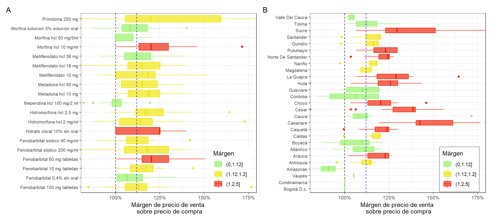
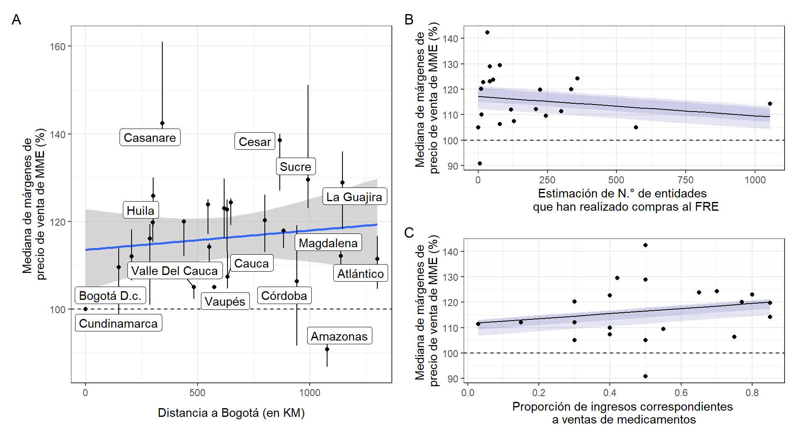

6.6 Precio de medicamentos
El gasto farmacéutico es una parte importante del gasto público en salud, y por esto se vuelve importante su control. Por otra parte, la definición de los precios de los medicamentos genera tensiones entre la libertad económica de los laboratorios, distribuidores y comercializadores de medicamentos frente al derecho a la salud de los pacientes que requieren de los beneficios de las tecnologías en salud44.
En Colombia se ha establecido un modelo de regulación de precios de medicamentos por lo cual existen tres regímenes de regulación: (i) Libertad regulada, (ii) Libertad vigilada y (iii) Control directo45. De estos se tiene que la Comisión Nacional de Precios de Medicamentos y Dispositivos Médicos (CNPMDM) sólo utiliza la Libertad Vigilada y el Control Directo46.
De acuerdo al ABC de la Regulación de Precios de Medicamentos, se ha observado un margen entre el precio ex-fábrica y el precio de distribuidor de aproximadamente el 7% teniendo en cuenta los datos internacionales, y se sugiere este márgen para referencia en el mercado colombiano46.
En la gestión de operaciones de distribución de MME por parte del FNE, se consideran dos canales de distribución principales los cuales son: (i) canal de distribución a FRE y (ii) canal de distribución mediante compra directa. Se considera que el canal de compra directa constituye una excepción, en los casos en donde no existe un Fondo Rotatorio que realice la distribución en un departamento determinado. Debido a esto, se debe considerar un precio de venta mayor en la utilización del canal de compra directa. En el caso de MME se realiza la estimación del precio de venta a FRE y se adiciona un margen del 12% para las operaciones en canal de compra directa.
En la Figura 6.20 se observa una comparación de los precios de ventas reportados como oficiales por los FRE en sus respectivos departamentos para la vigencia 2021. El precio se muestra para cada medicamento en una escala de color diferente en pesos colombianos. En la Figura 6.20 se puede observar que los medicamentos más costosos corresponden a Metilfenidato 36 mg (entre \(\$300.000\) y \(\$900.000\)) y Metilfenidato 36 mg (entre \(\$200.000\) y \(\$600.000\) pesos).
Figura 6.20: Precio de venta de medicamentos en los FRE.
En la línea de anticonvulsivantes se tiene que el medicamento más costoso es Fenobarbital 200 mg/mL con precios entre \(\$75.000\) a \(\$150.000\), mientras que en la línea de narcóticos se tiene al producto importado de Metadona tabletas 40mg como el más costoso (con precios que rondan \(\$100.000\) y \(\$200.000\)). Se tiene algunos departamentos con un color gris, lo que indicaría que el medicamento no hace parte del portafolio de MME que es distribuido en el departamento. Por otra parte, se tienen departamentos con un color de relleno blanco lo que indicaría casos en los que no se presenta un reporte activo de los precios de ventas en esos departamentos, se tienen como casos a Bolívar, Risaralda, Meta, Vichada, y Guainía.
Se realizó una comparación de márgenes de precios de venta frente a los precio de compra de MME por parte de los FRE, se tiene como referencia a los precios indicados en la plataforma de compra eficiente.
\[\mathrm{M}~(\%) = \frac{p}{v} \cdot 100\%\]
Donde, \(\mathrm{M}\) es el márgen de beneficio sobre el costo de adquisición \(v\) por parte del FRE (precio de venta del FNE), y \(p\) es el precio de venta desde el FRE. En el panel A de la Figura 6.21 se tiene una comparación de los márgenes de precio de venta frente a precio de compra de los MME. En verde, se tienen los medicamentos con una mediana de precios de ventas en departamentos menor al margen de venta mediante el canal de compra directa correspondiente a (112%), en estos medicamentos se tiene a Morfina solución oral 3%, Morfina HCl 50mg/mL, Metilfenidato tableta x 36mg, y Meperidina 100mg/2mL (estos medicamentos no tendrían sobrecostos respecto al canal de compra directa).
Figura 6.21: Comparativo de márgenes de precio de venta para: (A) Medicamentos y (B) Departamentos.
En azul se tienen los departamentos con un margen de precios entre 112% y 120%, en este casos se constituirían sobrecostos respecto al canal de compra directa para 11 medicamentos. Por último, en rojo se tienen medicamentos con margenes de precios de ventas mayores al 20% del precio de compra, se tienen los casos de Morfina hcl 10mg/mL, Hidrato de cloral 10% solución oral y Fenobarbital tabletas x 50mg.
En el panel B de la Figura 6.21 se tienen los márgenes de precio de venta sobre precio de compra de acuerdo a los departamentos, se tienen en verde departamentos con una mediana de márgenes de precio menores al 112%, en estos departamentos se tiene Atlántico, Córdoba, Boyacá, Tolima, Cauca, Valle del Cauca, Amazonas y Guaviare. En el otro extremo se tienen departamentos que tienen margenes de más del 20% sobre el precio de compra como Casanare, Sucre, Cesar, La Guajira, Putumayo, Norte de Santander, Chocó, Caquetá, y Arauca.
Por último, se realizó una comparación entre los márgenes de precio de venta en los departamentos y sus distancia física relativa a Bogotá (ver Figura 6.22) mediante regresión lineal. Parece existir una relación entre las dos variables, sin embargo la presencia de casos anómalos que se muestran como etiquetas en la figura impiden que se puede establecer una relación con significancia estadística (\(p = .513\)).
También se evaluaron otros factores cómo el número de instituciones que realizaron compras en la vigencia anterior (\(p = .667\)) y la proporción de ingresos constituida por venta de medicamentos (\(p = .429\)) pero no se encontró una relación significativa entre las variables (ver paneles B y C de la Figura 6.22.
Figura 6.22: Relación de márgen de ganancia y otras variables. (A) Distancia física en kilómetros, (B) N.° de entidades que realizado compras al FRE durante el último año, y (C) Proporción de ingreso correspondiente a ventas de medicamentos.
Se debe reconocer que un mal control de precios a nivel de laboratorio y distribuidores puede ocasionar distorsiones importantes en la cadena de suministro de manera que no se produce un beneficio óptimo al considerar toda la cadena. En este caso se podría esperar que precios de venta no competitivos a nivel de FRE generen un aumento en la proporción de compra directa por parte de instituciones en el territorio correspondiente.
Se debe tener en cuenta que un precio de venta alto no siempre garantiza un beneficio neto ya que este depende de la demanda así como las cantidades adquiridas y el nivel de desabastecimiento esperado29. Se deben revisar a profundidad los precios de los medicamentos en el territorio de manera que se articule una política de precios de medicamentos monopolio del Estado.